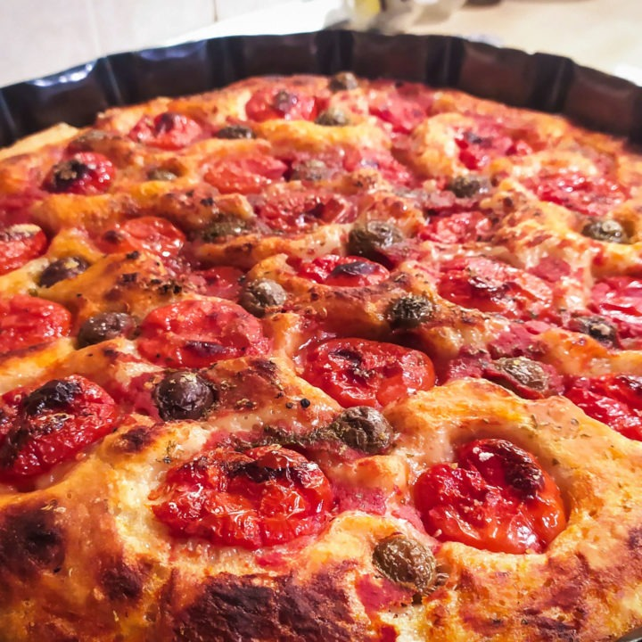

L'assassina non uccide
Non è un killer, ma il piatto preferito dei baresi
Una ruota non basta mai
Tutti pazzi per la focaccia

C'è un profumo che ogni barese riconoscerebbe anche a occhi chiusi: quello della focaccia appena sfornata. Questa specialità lievitata è molto più di un semplice spuntino, è un vero e proprio simbolo di Bari e della sua cultura gastronomica...
Un po' di Napoli a Bari
Nel capoluogo pugliese arrivano Da Michele, Porzio e Vincenzo Capuano

La pizza napoletana, con il suo impasto morbido e i bordi alti, è una delle meraviglie culinarie italiane, e ora anche Bari può vantare la presenza di alcuni dei migliori pizzaioli napoletani. Con l'arrivo di nomi del calibro di Da Michele, Porzio e Vincenzo Capuano, il capoluogo pugliese...